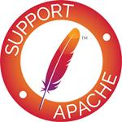

Apache OFBiz®
Apache OFBiz offers a great deal of functionality, including:
- advanced e-commerce
- catalog management
- promotion & pricing management
- order management (sales & purchase)
- customer management (part of general party management)
- warehouse management
- fulfillment (auto stock moves, batched pick, pack & ship)
- accounting (invoice, payment & billing accounts, fixed assets)
- manufacturing management
- general work effort management (events, tasks, projects, requests, etc)
- content management (for product content, web sites, general content, blogging, forums, etc)
- and much more all in an open source package!
Apache OFBiz® is an open source product for the automation of enterprise processes that includes framework components and business applications for ERP (Enterprise Resource Planning), CRM (Customer Relationship Management), E-Business / E-Commerce, SCM (Supply Chain Management), MRP (Manufacturing Resource Planning), MMS/EAM (Maintenance Management System/Enterprise Asset Management).
Apache OFBiz provides a foundation and starting point for reliable, secure and scalable enterprise solutions. Use it out-of-the-box, customize it or use it as a framework to implement your most challenging business needs. With OFBiz, you can get started right away without the huge deployment and maintenance costs of traditional enterprise automation systems. As your business grows, you can extend the functionality to meet your more sophisticated needs.
Apache OFBiz is licensed under the Apache License Version 2.0.
The Apache OFBiz project is part of The Apache Software Foundation.
OFBiz stands for Open For Business.
News
Apache OFBiz 16.11.03 is the third release of the 16.11 series, the latest and greatest OFBiz version that has been stabilized since November 2016.
Please refer to the Release Notes for the details.
The releases can be downloaded from the download page.
Apache OFBiz 16.11.02 is the second release of the 16.11 series, the latest and greatest OFBiz version that has been stabilized since November 2016.
Please refer to the Release Notes for the details.
The releases can be downloaded from the download page.
The Apache Software Foundation announces 18 years of Open Source Leadership.
If you use or depend on Apache OFBiz or any other Apache software then please consider supporting us with a donation. Click on the image for more information.

Apache OFBiz 16.11.01 is the first release of the 16.11 series, the latest and greatest OFBiz version that has been stabilized since November 2016.
Please refer to the Release Notes for the details.
The releases can be downloaded from the download page.